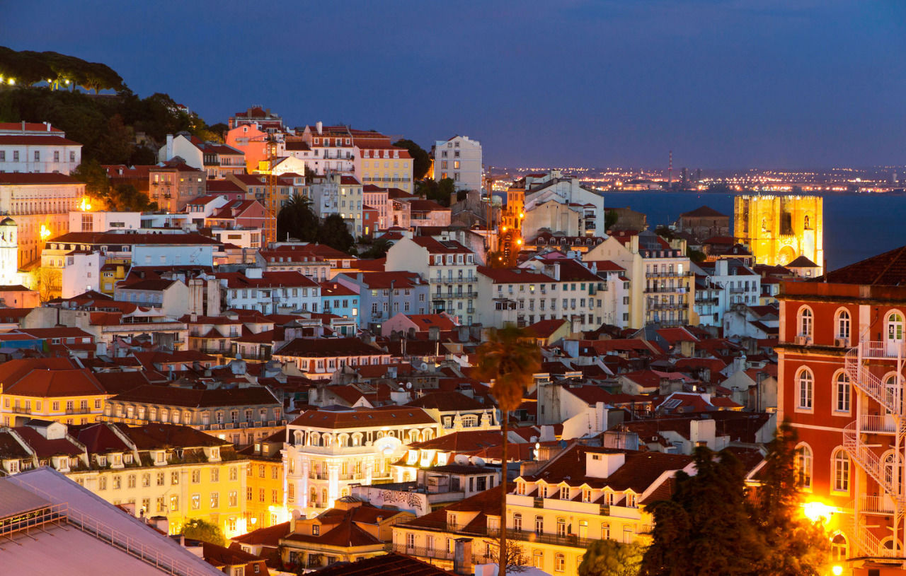
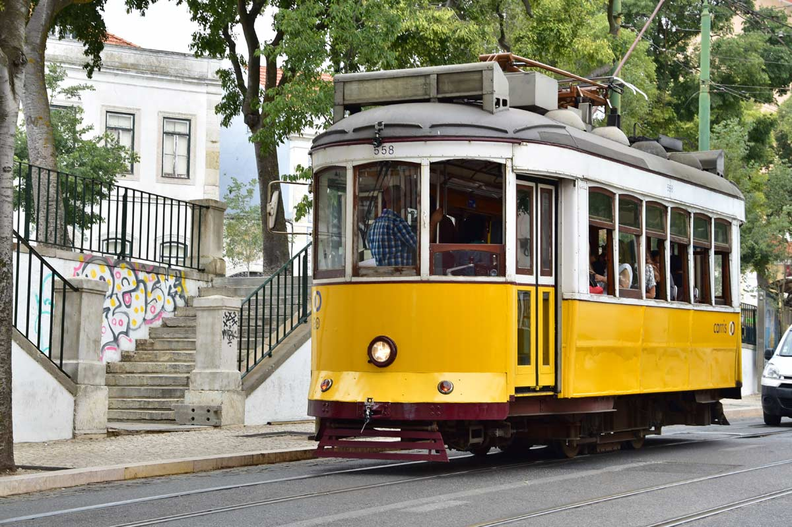
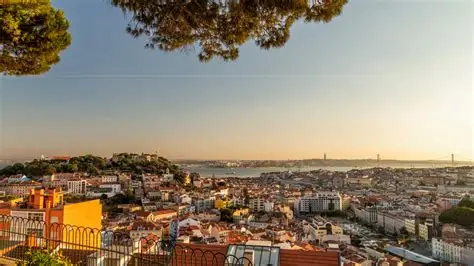
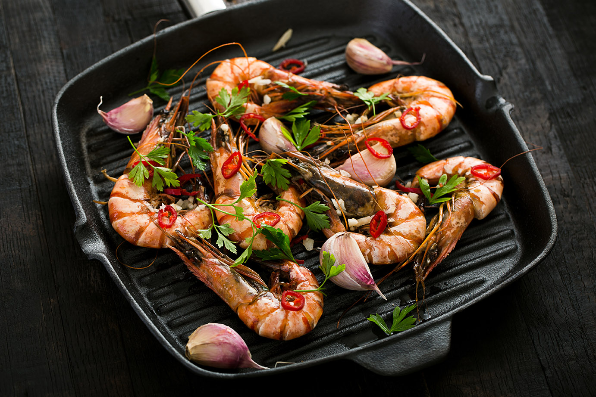

Lisbonne, ville ensoleillée du Portugal, combine charme historique et modernité. Ses ruelles pavées, tramways jaunes emblématiques et points de vue spectaculaires en font une destination incontournable. Découvrez culture, gastronomie et paysages uniques au cœur de l’Europe.
Vol : Environ 2h30 depuis Paris
Compagnies : TAP Portugal, Air France, Transavia
Climat : Doux et ensoleillé toute l’année ☀️



